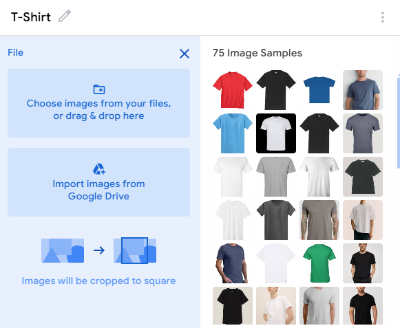

Clothes Identifier AI
Intelligent clothing image detection technology.
By: Pratyush Verma
Overview
the purpose of this project was to test the capablities of Teachable
Machine, a machine learning model builder developed by Google. I chose to
do different kinds of clothing because I saw it as an interesting way to
test the deep image detection capabilities of their image detection model.
Training Sample 1 - Hoodies
*Class one is comprised of 75 image samples of hoodies, in many varying
colors, backgrounds, and text. Some of the images are just the hoodie,
while others have people wearing them.
Training Sample 2 - T-Shirts

*Class two is comprised of 75 image samples of t-shirts, in many varying
colors, backgrounds, and text. Some of the images are just the t-shirt,
while others have people wearing them.
Training Sample 3 - Crewneck Sweaters
*Class three is comprised of 75 image samples of crewneck sweaters, in
many varying colors, backgrounds, and text. Some of the images are just
the crewneck, while others have people wearing them.
Training Sample 4 - Buttob-Up Shirts

*Class four is comprised of 75 image samples of button-up shirts, in many
varying colors, backgrounds, and text. Some of the images are just the
shirt, while others have people wearing them.
The Experiment
Here is a video of me testing the machine learning model I trained. When i
was running the experiment, i realized it was harder for it to identify
clothing when I held it up to the camera, but when I was wearing it, it
did it just fine!
Demos
You've seen how it works, now it's time for you to try it!
Below is an embedded build of my Clothes Identifier.
Alternatively,
you can click
here
to view the official build.
Conclusion
This project helped me learn more about machine learning and image
detection through ai, and it also allowed me to test teachable machine.
Some things that could be fixed are that it could not detect clothes
properly when they
are not being worn, but if it could it would add to convenience. This
project was
purely for fun, and it does not solve a real world problem. Thats all,
thanks for trying it!
Thank You!